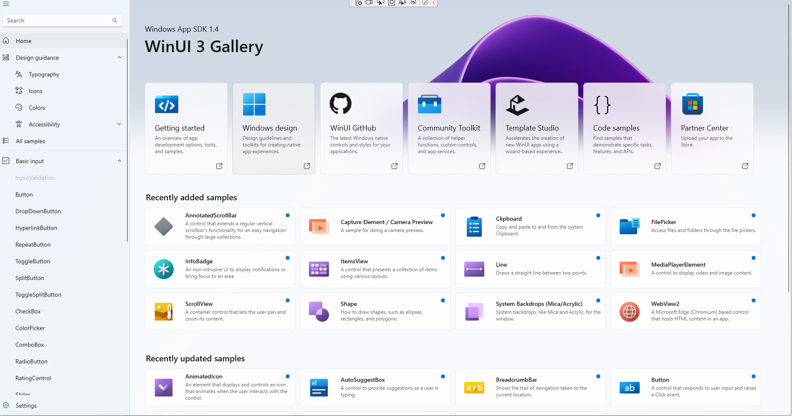

HomePage
主页长这个样子:

首先看xaml代码(HomePage.xaml):
<local:ItemsPageBase
x:Class="AppUIBasics.HomePage"
xmlns="http://schemas.microsoft.com/winfx/2006/xaml/presentation"
xmlns:x="http://schemas.microsoft.com/winfx/2006/xaml"
xmlns:controls="using:AppUIBasics.Controls"
xmlns:controls1="using:WinUIGallery.DesktopWap.Controls"
xmlns:local="using:AppUIBasics"
HighContrastAdjustment="None"
NavigationCacheMode="Enabled">
...
</local:ItemsPageBase>
ItemsPageBase是一个继承自Page和INotifyPropertyChanged的抽象类:
public abstract class ItemsPageBase : Page, INotifyPropertyChanged {
public event PropertyChangedEventHandler PropertyChanged;
private string _itemId;
private IEnumerable<ControlInfoDataItem> _items;
public IEnumerable<ControlInfoDataItem> Items {
get { return _items; }
set { SetProperty(ref _items, value); }
}
}
PropertyChangedEventHandler
继承了这个玩意儿之后这个Page相当于就可以作为一个Binding Source了，可以参考《深入浅出WPf》Page 84。
这里面需要通知给外面的是 Items(它的set函数中有Notify)。
protected bool SetProperty<T>(ref T storage, T value, [CallerMemberName] string propertyName = null) {
if (Equals(storage, value)) {
return false;
}
storage = value;
NotifyPropertyChanged(propertyName);
return true;
}
protected void NotifyPropertyChanged([CallerMemberName] string propertyName = null) {
PropertyChanged?.Invoke(this, new PropertyChangedEventArgs(propertyName));
}
这里的[CallerMemberName]是个注解, 编译器会自动填上”Items”。
继续往下看(HomePage.xaml)
<Page.Resources>
<CollectionViewSource x:Name="itemsCVS" IsSourceGrouped="true" />
</Page.Resources>
这里定义了一个资源, 名字叫做”itemCVS”, 暂时不管。
<Grid>
<VisualStateManager.VisualStateGroups>
<VisualStateGroup x:Name="LayoutVisualStates">
<VisualState x:Name="WideLayout">
<VisualState.StateTriggers>
<AdaptiveTrigger MinWindowWidth="{StaticResource Breakpoint640Plus}" />
</VisualState.StateTriggers>
</VisualState>
<VisualState x:Name="NarrowLayout">
<VisualState.StateTriggers>
<AdaptiveTrigger MinWindowWidth="0" />
</VisualState.StateTriggers>
<VisualState.Setters>
<Setter Target="learnMoreGrid.Margin" Value="16,36,0,36" />
<Setter Target="itemGridView.Padding" Value="4,0,4,36" />
<Setter Target="itemGridView.ItemContainerStyle" Value="{StaticResource IndentedGridViewItemStyleSmall}" />
</VisualState.Setters>
</VisualState>
</VisualStateGroup>
</VisualStateManager.VisualStateGroups>
</Grid>
出现新东西了，VisualStateGroup是啥?
VisualStateManager.VisualStateGroups
好像只是一个状态记录？
setter 是啥
setter通常和style一起用, 一般是”属性名=属性值”的形式，就是一个”设置器”:
<Setter Property="FontSize" Value="24"/>
举个例子:
<Style TargetType="TextBlock" x:Key="style1">
<Style.Setters>
<Setter Property="FontSize" Value="24"/>
</Style.Setters>
</Style>
<TextBlock Text="hello, style" Style="{StaticResource style1}">
接着往下看,
<GridView>
<GridView.Header>
<Grid x:Name="HeaderGrid" Margin="-24,0,-24,0">
<Grid.RowDefinitions>
<RowDefinition Height="204" />
<RowDefinition Height="*" />
</Grid.RowDefinitions>
<controls:HomePageHeaderImage
Grid.RowSpan="2"
Height="396"
VerticalAlignment="Top" />
<TextBlock AutomationProperties.AutomationId="__ClickableAreaTextBlock" />
<StackPanel
Margin="36,0,0,0"
VerticalAlignment="Center"
Orientation="Vertical">
<TextBlock
x:Name="smallHeaderSubtitleText"
FontSize="18"
Text="{x:Bind WinAppSdkDetails}" />
<TextBlock
x:Name="smallHeaderText"
Style="{StaticResource TitleLargeTextBlockStyle}"
Text="{StaticResource AppTitleName}" />
</StackPanel>
<controls:TileGallery
x:Name="headerTileGallery"
Grid.Row="1"
Margin="0,0,0,0" />
</Grid>
<GridView.Header>
</GridView>
在Header里面定一个了一个Grid,就是这块区域:

<Grid x:Name="HeaderGrid" Margin="-24,0,-24,0">
<Grid.RowDefinitions>
<RowDefinition Height="204" />
<RowDefinition Height="*" />
</Grid.RowDefinitions>
<controls:HomePageHeaderImage
Grid.RowSpan="2"
Height="396"
VerticalAlignment="Top" />
<TextBlock AutomationProperties.AutomationId="__ClickableAreaTextBlock" />
<StackPanel
Margin="36,0,0,0"
VerticalAlignment="Center"
Orientation="Vertical">
<TextBlock
x:Name="smallHeaderSubtitleText"
FontSize="18"
Text="{x:Bind WinAppSdkDetails}" />
<TextBlock
x:Name="smallHeaderText"
Style="{StaticResource TitleLargeTextBlockStyle}"
Text="{StaticResource AppTitleName}" />
</StackPanel>
<controls:TileGallery
x:Name="headerTileGallery"
Grid.Row="1"
Margin="0,0,0,0" />
</Grid>
定义了两行，HomePageHeaderImage横跨两行(Grid.RowSpan=”2”), StackPanel在第一行（默认？）并且包含2个字块。
第二行就是自定义个的一个TileGallery，看上去有点复杂。
先看这个背景图片的实现:
<controls:HomePageHeaderImage
Grid.RowSpan="2"
Height="396"
VerticalAlignment="Top" />
它在control目录下:
<UserControl
x:Class="AppUIBasics.Controls.HomePageHeaderImage"
xmlns="http://schemas.microsoft.com/winfx/2006/xaml/presentation"
xmlns:x="http://schemas.microsoft.com/winfx/2006/xaml"
xmlns:d="http://schemas.microsoft.com/expression/blend/2008"
xmlns:mc="http://schemas.openxmlformats.org/markup-compatibility/2006"
xmlns:toolkit="using:CommunityToolkit.WinUI"
Loaded="OnLoaded"
Loading="OnLoading"
Unloaded="OnUnloaded"
mc:Ignorable="d">
<UserControl.Resources>
<ResourceDictionary>
<ResourceDictionary.ThemeDictionaries>
<ResourceDictionary x:Key="Light">
<LinearGradientBrush x:Name="BackgroundGradient" StartPoint="0.5,0" EndPoint="0.5,1">
<GradientStop Offset="0.0" Color="#CED8E4" />
<GradientStop Offset="1.0" Color="#D5DBE3" />
</LinearGradientBrush>
</ResourceDictionary>
<ResourceDictionary x:Key="Dark">
<SolidColorBrush x:Key="BackgroundGradient" Color="Black" />
</ResourceDictionary>
<ResourceDictionary x:Key="HighContrast">
<SolidColorBrush x:Key="BackgroundGradient" Color="Black" />
</ResourceDictionary>
</ResourceDictionary.ThemeDictionaries>
</ResourceDictionary>
</UserControl.Resources>
<Grid>
<Grid
x:Name="ImageGrid"
Background="{ThemeResource BackgroundGradient}"
Opacity="0">
<Image
x:Name="HeroImage"
toolkit:VisualExtensions.NormalizedCenterPoint="0.5"
ImageOpened="OnImageOpened"
Source="/Assets/GalleryHeaderImage.png"
Stretch="UniformToFill" />
<Image
x:Name="HeroOverlayImage"
toolkit:VisualExtensions.NormalizedCenterPoint="0.5"
Opacity="0.5"
Source="/Assets/GalleryHeaderImage.png"
Stretch="UniformToFill" />
</Grid>
<Rectangle x:Name="ImageGridSurfaceRec" Fill="Transparent" />
</Grid>
</UserControl>
还没搞懂，暂时先略过。
接着看TileGallery，也在controls目录下，代码更加复杂了，一点点分析吧。
TitleGallery里面包了一个ScrollViewer, item是HeaderTile。主要学习一下这个绑定外部资源的方式:
<local:HeaderTile
Title="Getting started"
Description="An overview of app development options, tools, and samples."
Link="https://learn.microsoft.com/windows/apps/get-started/">
<local:HeaderTile.Source>
<Image Source="/Assets/HomeHeaderTiles/Header-WinUIGallery.png" />
</local:HeaderTile.Source>
</local:HeaderTile>
这里我们看到 HeaderTile赋值了 Title、Description、Link等属性，那么它们是如何绑定到HeaderTile内部的。
HeaderTitle内部的一个StackPanel如下：
<StackPanel
Grid.Row="1"
Orientation="Vertical"
Spacing="4">
<TextBlock
x:Name="TitleText"
FontSize="18"
Foreground="{ThemeResource TextFillColorPrimaryBrush}"
Style="{StaticResource BodyTextBlockStyle}"
Text="{x:Bind Title, Mode=OneWay}" />
<TextBlock
Foreground="{ThemeResource TextFillColorSecondaryBrush}"
Style="{StaticResource CaptionTextBlockStyle}"
Text="{x:Bind Description, Mode=OneWay}" />
</StackPanel>
原来，Bind还可以这么用。
HeaderTitle是一个包在Grid中的Button:
<Grid>
<HyperlinkButton>
...
</HyperlinkButton>
</Grid>
这个Button内部又包含一个Grid, Grid中有FontIcon、ContentPresenter以及一个有2行TextBlock的StackPanel。
这里ContentPresenter值得学习:
<ContentPresenter
HorizontalAlignment="Left"
VerticalAlignment="Top"
Content="{x:Bind Source, Mode=OneWay}" />
在外面是如何为这个 Source赋值的呢?
// 一个简单的
<local:HeaderTile.Source>
<Image Source="/Assets/HomeHeaderTiles/Header-WindowsDesign.png" />
</local:HeaderTile.Source>
// 一个复杂的
<local:HeaderTile.Source>
<PathIcon Data="{StaticResource GitHubIconPath}" Foreground="{ThemeResource TextFillColorPrimaryBrush}">
<PathIcon.RenderTransform>
<CompositeTransform
ScaleX="2.05"
ScaleY="2.05"
TranslateX="-20" />
</PathIcon.RenderTransform>
</PathIcon>
</local:HeaderTile.Source>
到这里，HomePage中的Grid.Header的布局就大概清楚了。